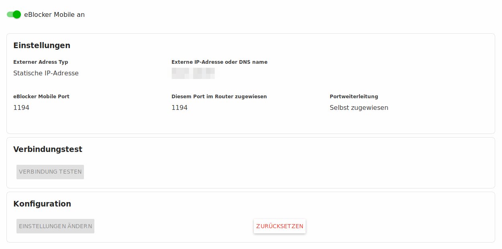

Deutsch | English
eBlocker Base ✓ / eBlocker Pro ✓ / eBlocker Family ✓
Mit der eBlocker Mobile Funktion schützen Sie ihre mobilen Geräte, wie Handys, Tablets und, Notebooks auch von unterwegs mit ihrem eigenen eBlocker. Um dies zu ermöglichen, müssen Sie den eBlocker mit wenigen Einstellungen am Router und dem jeweiligen Mobilgerät erreichbar machen.
Sie sollten eine IPv4 Verbindung von Ihrem Internetprovider gestellt bekommen. eBlocker Mobile funktioniert nicht mit einer IPv6 Verbindung.
Wenn Sie die eBlocker Mobile Funktion nutzen wollen, muss Ihr eBlocker direkt mit Ihrem Router verbunden sein.
Vergeben Sie für den eBlocker eine feste IP-Adresse in Ihrem Netzwerk.
Sehen Sie gegebenenfalls in Ihrem Router-Handbuch nach, wie man eine feste IP-Adresse für ein Gerät im Netzwerk vergeben kann.
Für die Nutzung von eBlocker Mobile muss die eBlocker DNS-Firewall aktiviert sein.
Zunächst müssen Sie von Ihrem Router zum eBlocker für den Port 1194 eine Portweiterleitung einrichten.
Hier finden Sie eine Anleitung zur Portweiterleitung für verschiedene Router.

Aktivieren Sie den Schalter, oder klicken Sie auf der Seite auf den Button Einstellungen ändern, um den Assistenten für die Einrichtung zu aktivieren. Der Assistent wird Sie bei der Einrichtung von eBlocker Mobile begleiten.
Der eBlocker Mobile Assistent wird bei Einrichtung einige Fragen stellen.
So können Sie angeben, ob Sie eine feste IPv4 Adresse von Ihrem Internet Anbieter zugewiesen bekommen haben, einen Dynamic DNS Anbieter (DynDNS) benutzten, oder den kostenlosen eBlocker Dynamic DNS Service benutzen möchten.
Einige Router lassen das Einrichten einer Portweiterleitung automatisch zu. Der eBlocker Mobile Assistent unterstützt diese Funktion, aber um sicher zu gehen, kann man die Portweiterleitung für den Port 1194 vom Router zum eBlocker selber einrichten.
Zum Abschluss kann man den Assistenten die Verbindung testen lassen und im Anschluss kann man den eBlocker Mobile Server starten.

Um auf den mobilen Geräten nun die eBlocker Mobile Funktion nutzen zu können, muss eine OpenVPN App installiert werden und die eBlocker OpenVPN Konfiguration in dieser App importiert werden.